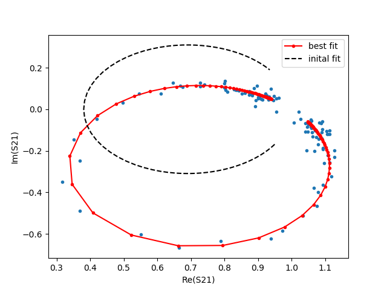
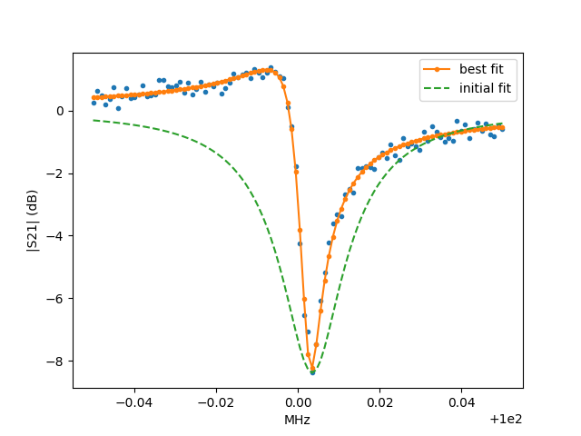

Note
Go to the end to download the full example code.
Complex Resonator Model¶
This notebook shows how to fit the parameters of a complex resonator, using lmfit.Model and defining a custom Model class.
Following Khalil et al. (https://arxiv.org/abs/1108.3117), we can model the forward transmission of a microwave resonator with total quality factor \(Q\), coupling quality factor \(Q_e\), and resonant frequency \(f_0\) using:
\(S_{21}\) is thus a complex function of a real frequency.
By allowing \(Q_e\) to be complex, this model can take into account mismatches in the input and output transmission impedances.
import matplotlib.pyplot as plt
import numpy as np
import lmfit
Since scipy.optimize and lmfit require real parameters, we represent
\(Q_e\) as Q_e_real + 1j*Q_e_imag.
The standard practice of defining a lmfit model is as follows:
class ResonatorModel(lmfit.model.Model):
__doc__ = "resonator model" + lmfit.models.COMMON_INIT_DOC
def __init__(self, *args, **kwargs):
# pass in the defining equation so the user doesn't have to later
super().__init__(linear_resonator, *args, **kwargs)
self.set_param_hint('Q', min=0) # enforce Q is positive
def guess(self, data, f=None, **kwargs):
verbose = kwargs.pop('verbose', None)
if f is None:
return
argmin_s21 = np.abs(data).argmin()
fmin = f.min()
fmax = f.max()
f_0_guess = f[argmin_s21] # guess that the resonance is the lowest point
Q_min = 0.1 * (f_0_guess/(fmax-fmin)) # assume the user isn't trying to fit just a small part of a resonance curve
delta_f = np.diff(f) # assume f is sorted
min_delta_f = delta_f[delta_f > 0].min()
Q_max = f_0_guess/min_delta_f # assume data actually samples the resonance reasonably
Q_guess = np.sqrt(Q_min*Q_max) # geometric mean, why not?
Q_e_real_guess = Q_guess/(1-np.abs(data[argmin_s21]))
if verbose:
print(f"fmin={fmin}, fmax={fmax}, f_0_guess={f_0_guess}")
print(f"Qmin={Q_min}, Q_max={Q_max}, Q_guess={Q_guess}, Q_e_real_guess={Q_e_real_guess}")
params = self.make_params(Q=Q_guess, Q_e_real=Q_e_real_guess, Q_e_imag=0, f_0=f_0_guess)
params[f'{self.prefix}Q'].set(min=Q_min, max=Q_max)
params[f'{self.prefix}f_0'].set(min=fmin, max=fmax)
return lmfit.models.update_param_vals(params, self.prefix, **kwargs)
Now let’s use the model to generate some fake data:
resonator = ResonatorModel()
true_params = resonator.make_params(f_0=100, Q=10000, Q_e_real=9000, Q_e_imag=-9000)
f = np.linspace(99.95, 100.05, 100)
true_s21 = resonator.eval(params=true_params, f=f)
noise_scale = 0.02
np.random.seed(123)
measured_s21 = true_s21 + noise_scale*(np.random.randn(100) + 1j*np.random.randn(100))
plt.plot(f, 20*np.log10(np.abs(measured_s21)))
plt.ylabel('|S21| (dB)')
plt.xlabel('MHz')
plt.title('simulated measurement')
Try out the guess method we added:
guess = resonator.guess(measured_s21, f=f, verbose=True)
fmin=99.95, fmax=100.05, f_0_guess=100.00353535353536
Qmin=100.00353535354105, Q_max=99003.50000055433, Q_guess=3146.537781821432, Q_e_real_guess=5082.2474265369565
And now fit the data using the guess-ed values as a starting point:
result = resonator.fit(measured_s21, params=guess, f=f, verbose=True)
print(result.fit_report() + '\n')
result.params.pretty_print()
[[Model]]
Model(linear_resonator)
[[Fit Statistics]]
# fitting method = leastsq
# function evals = 41
# data points = 200
# variables = 4
chi-square = 0.08533642
reduced chi-square = 4.3539e-04
Akaike info crit = -1543.89425
Bayesian info crit = -1530.70099
R-squared = (-12528141463346.541+2276419597604.5474j)
[[Variables]]
f_0: 100.000096 +/- 7.0309e-05 (0.00%) (init = 100.0035)
Q: 10059.4972 +/- 142.294636 (1.41%) (init = 3146.538)
Q_e_real: 9180.62017 +/- 133.777681 (1.46%) (init = 5082.247)
Q_e_imag: -9137.03667 +/- 133.769692 (1.46%) (init = 0)
[[Correlations]] (unreported correlations are < 0.100)
C(Q, Q_e_real) = +0.5175
C(f_0, Q_e_imag) = +0.5175
C(f_0, Q_e_real) = +0.5151
C(Q, Q_e_imag) = -0.5150
Name Value Min Max Stderr Vary Expr Brute_Step
Q 1.006e+04 100 9.9e+04 142.3 True None None
Q_e_imag -9137 -inf inf 133.8 True None None
Q_e_real 9181 -inf inf 133.8 True None None
f_0 100 99.95 100 7.031e-05 True None None
Now we’ll make some plots of the data and fit. Define a convenience function for plotting complex quantities:
def plot_ri(data, *args, **kwargs):
plt.plot(data.real, data.imag, *args, **kwargs)
fit_s21 = resonator.eval(params=result.params, f=f)
guess_s21 = resonator.eval(params=guess, f=f)
plt.figure()
plot_ri(measured_s21, '.')
plot_ri(fit_s21, '.-', label='best fit')
plot_ri(guess_s21, '--', label='initial fit')
plt.legend()
plt.xlabel('Re(S21)')
plt.ylabel('Im(S21)')
plt.figure()
plt.plot(f, 20*np.log10(np.abs(measured_s21)), '.')
plt.plot(f, 20*np.log10(np.abs(fit_s21)), '.-', label='best fit')
plt.plot(f, 20*np.log10(np.abs(guess_s21)), '--', label='initial fit')
plt.legend()
plt.ylabel('|S21| (dB)')
plt.xlabel('MHz')
- 
- 
Total running time of the script: (0 minutes 0.760 seconds)